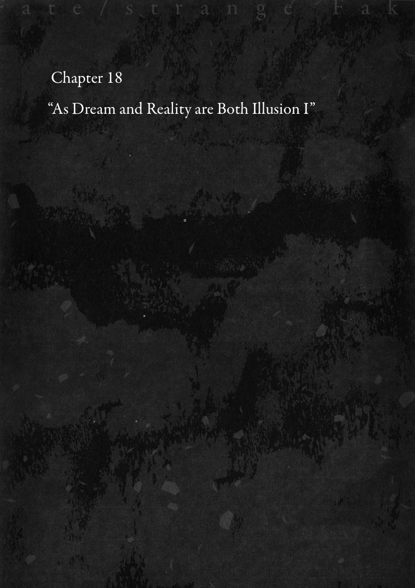
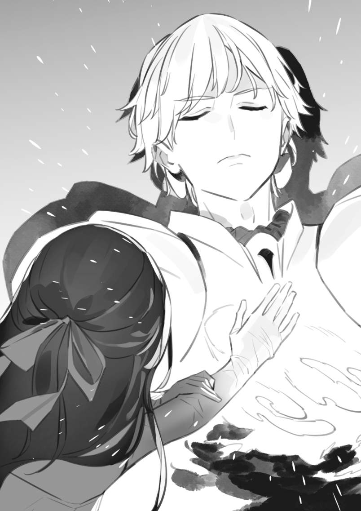

Uma Cidade Isolada, Rua Principal
"O quê...?"
A primeira pessoa a reagir à pergunta de Saber não foi um dos policiais, mas Ayaka, que vinha ouvindo tudo com meio desinteresse.
"Mas, se aquela garotinha for a causa, vocês vão conseguir matá-la?"
Ela entendeu o que Saber queria dizer.
Se a garota acabasse sendo a razão de terem sido arrastados para aquele mundo deserto, havia uma boa chance de que "resolver" o problema dela lhes permitisse voltar ao mundo original.
No instante em que esse pensamento tomou forma em sua cabeça... algo pulsou.
Ayaka piscou devagar, controlando a respiração.
Quando abriu em silêncio as pálpebras pesadas... ela estava ali.
Bem do outro lado da Rua Principal, visível através de uma brecha entre os oficiais.
Estava longe demais para se distinguir seu rosto, mas Ayaka a reconheceu na hora.
Uma garotinha com o rosto coberto por algo como um capuz vermelho, vermelho - simplesmente vermelho. Parecia ter uns três anos, ou talvez uns seis, e Ayaka teve a sensação de que era muito mais velha do que isso.
Ayaka não tinha como ter certeza de sua altura nem de sua idade. Só a percepção da cor vermelha atravessou seus olhos e saiu devastando seu cérebro.
Como pode...? No instante seguinte... Chapeuzinho Vermelho estava mais perto.
Ela não tinha vindo correndo; antes que Ayaka entendesse o que estava acontecendo, já estava logo atrás do grupo de policiais.
Antes ela só estava visível à distância, mas agora Ayaka podia vê-la com clareza.
"Chapeuzinho Vermelho" - o objeto do terror contínuo de Ayaka e um dos motivos que a haviam levado aos Estados Unidos.
Não tem elevador aqui, então por quê...?
Chapeuzinho Vermelho só devia aparecer dentro de elevadores. Ayaka nem sabia ao certo se aquilo era real ou uma alucinação.
Desde sua chegada a Snowfield, porém, as regras tinham começado a mudar.
Parecia a Ayaka que a presença da Chapeuzinho Vermelho se aproximava mais dela toda vez que estava prestes a se lembrar de alguma coisa naquela cidade.
Seu corpo inteiro se cobriu de suor frio, mas ela não conseguiu desviar o olhar.
Viu o capuz da Chapeuzinho Vermelho se mover enquanto ela virava lentamente a cabeça em sua direção.
Ah, não. Não.
Não sei por quê, mas isso vai ser o meu fim. Se eu vir o rosto sob esse capuz, acabou para mim.
Mesmo que quisesse gritar, seus pulmões estavam rígidos e ela mal conseguia respirar.
Estava tão paralisada de medo que não conseguia sequer fechar os olhos, quanto mais desviar o olhar. Chapeuzinho Vermelho ergueu ainda mais o capuz. Quando chegou ao ponto em que Ayaka já podia ver seus lábios contorcidos num sorriso de escárnio, Chapeuzinho Vermelho desapareceu de sua vista.
Encoberta por Saber, que se inclinara para ver seu rosto.
"O que foi, Ayaka? Você está pálida como um fantasma."
Ao mesmo tempo, o corpo de Ayaka foi libertado da paralisia.
Ela se apressou em olhar para trás de Saber, mas já não havia mais nada ali. "...Ah, não foi nada. Só um devaneio ruim."
"Às vezes você fica assim mesmo. Está sob alguma maldição? Se estiver, talvez eu consiga dissipá-la."
"...Obrigada, mas acho que não é nada disso..."
Ayaka recusou a oferta de Saber e então tornou a encarar o rosto dele... e decidiu ir atrás do desconforto que provavelmente a fizera ver a "Chapeuzinho Vermelho".
O desconforto e a inquietação que de repente cresceram dentro dela fizeram suas cordas vocais se contorcerem por reflexo.
"...Mais importante, Saber, aquela... hum... garota de que você estava falando é a que está em coma, certo?"
"Sim, mas ao que parece já está confirmado que ela se tornou uma Mestre de algum jeito, então..."
"Não... não foi isso que eu quis dizer..." Ayaka perguntou com certa inquietação, tentando puxar para fora a origem do mal-estar que brotara dentro dela.
"Por que você perguntou 'vocês vão conseguir'... e não 'vocês vão'?"
"..."
"Bom... eu não sei bem como dizer isto, mas... não soou como se você estivesse perguntando se eles vão matá-la ou não... Desculpa se eu estiver errada... mas soou mais como se você estivesse dizendo: 'Se vocês não conseguirem matá-la, eu mato.'..." Ayaka perguntou, escolhendo as palavras com cuidado.
Saber ficou em silêncio por um momento... e então respondeu com um sorriso aflito.
"Sinceramente, Ayaka, às vezes você percebe coisas demais."
"Saber?!"
"Espere, calma. Não se preocupe. Não estou tentando dizer que matar a garota seja a escolha certa, e não quero matá-la se puder evitar. Quero salvá-la tanto quanto você."
"E-Entendi..." Ayaka se sentiu de algum modo aliviada, mas, à medida que foi se acalmando, perguntou: "Então por que você perguntou..."
Ayaka teve dificuldade em formular a pergunta, mas Saber intuiu sua intenção e respondeu, escolhendo as palavras com cuidado.
"Claro que eu quero salvar a garota e não tenho a menor intenção de desistir. Mas, se tentarem matá-la para salvar outra pessoa, por mais que eu tente impedi-los... no fim, não vou conseguir contê-los. Não sem vencê-los à força."
Ele parecia uma pessoa diferente do Saber que falara com leveza até sobre questões de vida e morte.
Saber continuou a falar não como cavaleiro nem como Saber, mas como a encarnação de alguma outra coisa que Ayaka não reconhecia.
"Então... se, por algum capricho do destino, formos colocados numa situação em que alguém precise matá-la... quando esse momento chegar, serei eu a fazer isso."
"Por quê?!" Ayaka gritou sem querer.
Ela entendia o raciocínio dele.
Se um "sacrifício" se tornasse absolutamente necessário, alguém teria de fazê-lo.
Mesmo quando pensava em si própria, não tinha certeza do que faria se lhe dissessem que podia salvar a garota, mas que, em troca, ficaria presa naquela cidade deserta.
Não, eu... provavelmente... sacrificaria aquela garotinha... que eu nunca nem conheci.
Não, tenho certeza disso.
Tingida de vermelho.
Afinal...
Tingida de vermelho.
Eu até deixei... Tingida de vermelho... uma garota que eu conhecia morrer.
Tingida de um vermelho vivo, carmesim.
A cor do capuz da "Chapeuzinho Vermelho" estava gravada de forma indelével no interior de suas pálpebras.
Ela queria gritar, mas não conseguia. Se desabasse ali, não poderia mais falar com Saber.
Também não conseguiria mais detê-lo.
Ao pensar nisso, arrancou palavras do fundo da garganta enquanto o mundo parecia girar ao seu redor.
"Por quê...? Você não precisa fazer isso... Você não... então por que faria?"
As palavras saíram quebradas, mal formando a pergunta.
"Sim..." Saber, porém, fez o possível para compreender a intenção de Ayaka e responder.
"Acho que isso quer dizer que, no fim das contas, eu não consegui me tornar como os cavaleiros que admirava." Então ele se voltou de novo para os policiais, que estavam bem confusos, embora não tanto quanto Ayaka, e declarou com orgulho:
"Mas vocês são diferentes. Vocês são cavaleiros esplêndidos."
"Do que você está...?"
Cortando Vera no meio, Saber, que fora rei em vida, elogiou os oficiais como se estivesse exaltando as virtudes de seus próprios seguidores.
"Vocês lutaram honradamente contra aquele arqueiro aterrador e sobreviveram! Tudo isso para salvar uma garota sem relação alguma com vocês, que vocês sequer viram! Portanto, devem continuar sendo defensores dos inocentes! Não, precisam ser! Jamais deveriam feri-los, nem para proteger o restante das pessoas ou a própria sociedade."
Saber baixou os olhos e, depois de um silêncio momentâneo, como se estivesse olhando para algum outro lugar, continuou.
"Depois que se faz isso uma vez, perde-se o controle... Eu é que devo carregar essa responsabilidade."
"Saber!" Ayaka gritou de novo. "Não! Isso está errado! Você não é assim... Você está sempre sorrindo, e nunca abandona ninguém!"
Ayaka não conseguia entender por que estava gritando com tanta emoção.
Mas não era algo racional.
Tinha a sensação de que, se não gritasse agora, Saber - o Espírito Heroico que conseguira rir ao lado dela até um instante atrás - desapareceria diante de seus olhos.
Ela não sabia nada sobre a Guerra do Santo Graal e achava que o que tinha a dizer devia ser só a birra de uma ingênua mimada... mas, mesmo assim, forçou para fora as palavras que brotavam do fundo do peito.
"...Você pensa alto demais de mim, Ayaka..."
"Não é por eu ser sua Mestre substituta. Tenho certeza de que você salvaria até uma criança qualquer na rua. Isso eu consigo perceber! Você não é como eu! Não é! Não vou dizer que você nunca pode matar ninguém - seria egoísmo, e eu não tenho esse direito -, mas..."
Nesse ponto, Ayaka perdeu as palavras por um instante, mas cerrou os dentes e cuspiu o seu grito, sua emoção crua, junto de todas as reservas que tinham ficado presas no fundo da garganta.
"Não importa se, no fim, você tiver de sujar as mãos. Isso não apaga o fato de que você me salvou! Mas... pelo menos não fale como se precisasse ser o vilão..."
Por fim, concluiu sua explosão de paixão com uma declaração que cruzava uma linha. "Então... se alguém tiver de ser o vilão... serei eu."
"..."
Saber ouviu Ayaka, que soava como se estivesse condenando a si mesma, e não a ele, olhou para seu rosto dolorido... e viu nela os subordinados de sua época de vida.
"Por quê, Majestade?! Ricardo?!"
"Não havia necessidade de carregar esses pecados! Por que não deixou isso conosco?!"
"Você devia ter se tornado um herói! Por que não nos deixou fazer isso e fingiu não saber de nada?!"
"Oh, oh, Majestade... seu coração de leão cresceu demais. O senhor é destemido demais!"
As palavras do homem que o seguira como mago da corte voltaram à sua mente, interrompendo suas reflexões.
"Meu Deus. Eu sabia que acabaria assim, é claro.
"Mesmo assim, eu de fato tentei impedi-lo. E este é o resultado.
"Por outro lado, se não tivesse terminado assim, provavelmente seria caso de poda.
"Dito isso, até eu, Saint-Germain, estou um tanto chocado. Até o mahatma está chocado.
"Sim, isso mesmo! Exatamente! Você é maravilhosamente ousado! Um verdadeiro Coração de Leão!
"Foi justamente por isso que nunca teve medo! Medo de coisa nenhuma!
"Nem de dez mil inimigos, nem de generais acima de você, nem de retaliação mística, nem de monstros sobre-humanos..."
"Nem mesmo de manchar as próprias mãos... com o sangue de incontáveis inocentes."
Por fim... como uma maldição vinda do passado distante, ele recordou as palavras de seu irmão mais novo de sangue.
"Ora, com o que você está preocupado, irmão?
"Não importa quanto sangue haja em suas mãos, o povo desta terra está enfeitiçado por você.
"Por algum motivo, parece que cabe a mim carregar sua desonra e levar pedradas no seu lugar.
"O que acha? Não sou um belo palhaço? Pode rir, irmão! "...Ria. Você é um homem de sorte. É um herói nacional, não é?
"Se você é um herói... então ria."
"Entendo..."
Saber baixou os olhos e ficou em silêncio por um momento.
Quando os abriu de novo, o brilho resignado, como fogo bruxuleante, havia desaparecido, e eles eram os olhos de sempre outra vez.
"Você nota até as menores coisas, como sempre, Ayaka... era o que eu queria dizer, mas isso não está certo, está?"
"Claro que não. Encontrar você já não é algo pequeno para mim."
"...Tudo bem, então vou recuar desta vez. Mas fique avisada: da próxima eu não perco."
"Hã?!... Isso era uma competição?"
Saber ignorou com afetação a Ayaka confusa e de olhos arregalados e anunciou em seu jeito habitual:
"Não posso muito bem obrigar Ayaka a fazer o trabalho sujo, e ela não vai me deixar fazê-lo... então só me resta salvar a garota, mesmo que me custe a vida! Depois, todos nós sairemos daqui em segurança!"
"Saber...?"
Saber sorriu radiante para Ayaka, confusa com sua súbita volta ao comportamento usual.
"Não vai ser problema. A igreja foi nosso ponto de partida neste mundo-barreira. Que tal acolhermos a garota que ficou de fora no lugar do padre e roubarmos a cena do supervisor?"
"...Boa ideia. Eu ajudo."
Ayaka abriu um sorriso aliviado... quando uma súbita apreensão vaga fez uma expressão confusa cruzar seu rosto.
"...Igreja... Acolher..."
"O que foi?" Vera, que permanecera em silêncio até então, perguntou à perturbada Ayaka ao perceber que a conversa da dupla havia terminado por enquanto.
"Acho que..."
Ayaka disse vacilante, mergulhada em pensamentos. "Acho que já encontrei aquele cara da armadura dourada..."
"O quê?"
"Mas... onde...?"
Ayaka tentava se lembrar de alguma coisa.
Não conseguia deixar de sentir que reconhecia aquele Espírito Heroico dourado que tentara matar Ricardo de sua posição no telhado da igreja.
E as palavras-chave "igreja" e "acolher uma criança" começaram a sacudir violentamente seu cérebro, trancado por uma chave gasta pelo tempo.
Mas, a cada sacudida, ela sentia vividamente a presença da "Chapeuzinho Vermelho", e o medo de que "não podia se lembrar de mais nada" mantinha fechadas as portas de sua memória.
Eu sei que preciso lembrar... Então por quê...? Ayaka lutou desesperadamente para alcançar suas próprias lembranças.
Tinha a sensação de que a "Chapeuzinho Vermelho" estava bem atrás dela.
Tinha a sensação de que ela tentava lhe dizer alguma coisa.
Tinha a sensação de que podia ouvir sua voz.
Ayaka tentou suportar o terror e ainda assim continuar pensando... até perceber Saber e os policiais olhando ao redor e se dar conta de que não era só seu cérebro que estava tremendo.
"?... O quê?" murmurou com desconfiança no exato instante em que as solas de seus pés começaram a sentir claramente a terra pulsar.
"U-Um terremoto?!"
Não, não é um terremoto. Tem alguma coisa vindo na nossa direção...
Então... à medida que as vibrações ficavam cada vez mais fortes, "aquilo" surgiu detrás de um prédio.
Um cão enorme, negro como piche, facilmente com mais de quinze metros de altura. Seu corpo inteiro soltava uma fumaça semelhante a miasma, e chamas negras, da mesma cor de seu pelo, escorriam sem cessar de suas mandíbulas: as mandíbulas do monstro tricéfalo abençoado por Hades.
Vários Anos Antes, em Algum Lugar da Europa
"Então você vai aceitar a proposta? Eu mesma pretendo me abster."
A maga, cujo jeito de falar passava uma impressão de astúcia, tinha a aparência externa de uma garota jovem.
Embora as roupas elegantes que usava sugerissem uma jovem recatada de boa família, o corvo pousado em seu ombro parecia estranhamente à vontade ali, criando a sensação de que ela era algo fora do comum.
Era uma maga que, apesar de pertencer à Torre do Relógio, mantinha distância dela por detestar suas disputas de poder.
Dizia-se que seu modo de falar, um tanto idoso apesar da voz doce, vinha do fato de na verdade ter mais de oitenta anos, ou do resultado de ter herdado seus Circuitos Mágicos já carregados com o conhecimento de donos anteriores, mas a verdade permanecia um mistério.
Aquela maga de ar experiente falava com uma usuária de magia cuja juventude combinava com a própria aparência.
"...É porque você quer proteger a sociedade mágica?"
"Ha ha! Se um único ritual bastasse para destruir nossa sociedade, ela já teria deixado de existir há muito tempo... ou era o que eu gostaria de dizer... mas ultimamente correm boatos de que um ritual no Extremo Oriente entrou em território bem perigoso. Eu achava estranho que essa tal 'Guerra do Santo Graal' não atraísse muita atenção, apesar de um Lord ter morrido numa delas há dez anos, mas parece que alguém vem manipulando o fluxo de informações."
A Guerra do Santo Graal. Era conhecida como um ritual menor no Extremo Oriente, mas não chamara atenção séria até poucos meses antes, quando o "quinto ritual" fora realizado.
Não haviam conseguido descobrir os detalhes do que tinha sido feito ali ou alcançado com aquilo.
Ainda assim, rumores plausíveis diziam que, se as coisas tivessem dado errado, aquilo poderia ter se tornado um dos "fins" de que falavam os eremitas do Instituto Atlas.
"Nenhum mago respeitável aceitaria uma proposta tão absurda quanto recriar essa Guerra do Santo Graal na América, ainda mais sem o respaldo da Associação dos Magos. Procuraram você por causa do seu ressentimento contra a Associação, apesar da qualidade da sua linhagem... pelo menos é o meu palpite. Tenho grande respeito pelo seu talento, mas, quando o assunto é aquele monstro, a Francesca, a habilidade individual é, na melhor das hipóteses, secundária."
"...Isso não me incomoda."
A garota diante da maga com o corvo no ombro ainda não tinha sequer quinze anos.
Mesmo assim, seu olhar estava cheio de resignação para com o mundo inteiro, e o tênue brilho no fundo dos olhos vinha das chamas escuras do ódio.
Pelo menos, a maga domadora de corvos estava convencida disso.
"...Só entre nós, certa vez, quando eu participava de um leilão no Rail Zeppelin, vi de relance um Ghost Liner... um desses 'Espíritos Heroicos'. Não era algo no nível de um familiar; era uma sombra da Ordem Humana gravada na própria Terra. Não pense que pode usar algo assim para uma vingança pessoal e sair ilesa."
"..."
"Se você quer destruir algo grande, precisa pagar o preço", continuou a maga do corvo para a garota, que cerrava levemente os punhos e baixava o olhar. "Destruir a Associação dos Magos equivale a fazer da própria sociedade mágica sua inimiga. Há incontáveis pessoas preparadas para serem destruídas elas mesmas no fim, mas não se esqueça: seu avô, que abandonou a própria humanidade, foi uma delas... e a ordem é inversa. Quanto maior a coisa que você quer destruir, mais cedo você mesma será destruída primeiro. Chame isso de 'pagamento adiantado'.
"Basta olhar para os magos", continuou a astuta dama maga de aparência juvenil para a usuária de magia cuja guardiã legal ela havia se tornado. "Eles se esforçam para violar as leis da natureza e alcançar a Raiz, e não são todos eles quebrados?"
Depois de um sorriso levemente autodepreciativo, o rosto da maga se tornou inexpressivo, e ela perguntou à garota que havia se tornado sua tutelada:
"Haruri Borzak, você vai se quebrar como pessoa ou como maga?"
"Nenhuma das duas, senhora", respondeu com simplicidade a garota chamada Haruri à maga que a superava de longe.
"Eu já me quebrei há muito tempo. Fui quebrada por aquelas pessoas da Torre do Relógio..."
"..."
"Meu pai e minha mãe eram magos comuns... mas foram marcados como hereges e tiveram tudo tomado deles, tudo para que a Torre do Relógio pusesse as mãos nos resultados de pesquisa que herdaram do meu avô, que abandonou a própria humanidade!"
"...Mas não tomaram a sua vida, tomaram? Foi a perspicácia dos Borzak que lhes permitiu transmitir o Brasão a você, ainda que apenas em parte, e deixá-la escapar. Se você conspirar com aquela coisa, com a Francesca, então tudo isso terá sido em vão."
Ela tornou o tom um pouco mais grave ao falar, mas a expressão de Haruri não mudou.
Quando a maga que era guardiã de Haruri viu isso, soltou um leve suspiro e balançou a cabeça.
"Se você fosse uma maga, aceitaria a espoliação pela Torre do Relógio como algo 'natural'... mas, no instante em que desejou vingança por seus pais em vez de restauração como maga, você deixou de ser maga. Você ainda não está quebrada. Ainda poderia recomeçar. Poderia se esconder e usar a magia para tornar sua vida um pouco mais fácil."
Ela disse isso, mas não fez mais esforço para deter Haruri.
Haruri era apenas sua tutelada, não sua aprendiz, e a relação entre ambas não era imposta por magia. Aparentemente, ela decidira que não era o seu caminho se envolver mais profundamente.
Tinha um dever para com uma descendente de seus conhecidos, os Borzak, mas esse dever não se transformaria facilmente em compaixão.
Podia manter distância da Torre do Relógio, mas ainda era maga nesse tanto.
"Acredito que o Lord que vislumbrei no Rail Zeppelin, El-Melloi II, creio eu, talvez aceitasse até mesmo alguém em conflito com a sociedade mágica como você em sua escola, mas suponho que seria descortês detê-la por mais tempo."
Os olhos do corvo brilharam de modo inquietante enquanto a maga se afastava rumo à escuridão. Ela andava como uma garota da idade aparente que se perdera à noite, mas o olhar do corvo em seu ombro era afiado a ponto de assustar, e permaneceu fixo na garota chamada Haruri.
"...Nunca se esqueça, Haruri."
A voz que ecoou um instante antes de elas se dissolverem na escuridão saiu da boca da garota ou da plumagem do corvo?
A garota, cujos tímpanos e coluna estremeceram, já não conseguia dizer.
"Não importa o quanto você esteja preparada para se quebrar..."
Essas últimas palavras, porém, tornaram-se reverberações que permaneceram em Haruri, usuária de magia.
"Preparação nenhuma significa coisa alguma diante de alguém que já nasceu quebrado."
O Presente, Snowfield, um Distrito Residencial de Luxo
"Hmm..."
A voz de uma mulher ecoou na Snowfield real. Havia nela uma beleza de algum modo irreal.
"Eu tinha certeza de que ele viria correndo me caçar de imediato... mas Utu já está alto no céu e ainda não há sinal dele. É surpreendentemente cauteloso, considerando que o melhor amigo dele acabou de ser esmagado."
Uma área residencial de luxo no distrito de Snowerk.
A maior mansão dali pertencia ao dono do prédio do cassino no centro da cidade.
Pelo menos em público.
O proprietário era um representante colocado ali durante a construção da cidade: um empresário que morrera jovem de doença e apenas fora feito parecer vivo.
Na prática, o prédio do cassino era administrado por um dos magos "de dentro", que usava magia para se disfarçar como o falecido empresário e enganar os olhos do público quando era absolutamente necessário que o proprietário aparecesse.
Como resultado, aquela mansão elegante, que parecia pertencer a alguma estrela menor de Hollywood, não tinha dono de verdade: seus únicos visitantes eram funcionários que faziam o mínimo de manutenção necessário para manter as aparências.
E, no entanto... naquele momento um grupo a usava como se lhe pertencesse.
Uma mulher se recostava num sofá branco puro, tão luxuoso que sozinho provavelmente custava o preço de uma casa pequena. Ela apenas estava sentada casualmente, mas passava a impressão de que formaria um quadro perfeito, não importava quem a olhasse nem de que ângulo, como se fosse a própria definição de beleza.
"Tanto faz. Quero deixar Gugalanna ter a honra de dar cabo daquela tranqueira, de qualquer jeito."
A pessoa que tinha essa impressão gravada diretamente nos olhos era uma garota ainda no fim da adolescência.
Haruri Borzak, a garota que observava aquela deusa de um canto do aposento enorme, encarava Filia, a mulher no sofá, com um ar um tanto sombrio nos olhos.
"O que foi? Por que essa cara?"
Haruri respondeu à pergunta de Filia num tom misturado de cautela e medo. "...Você poderia, por favor, me dizer o seu nome?"
"Ah, você ainda está presa nisso? Eu não disse? Se já percebeu o quanto sou encantadora, não precisa saber mais nada."
"No momento... não é só encanto. Eu também sinto medo. Eu sei que disse que a única coisa que me importava era que você tivesse me salvado... mas, já que vamos lutar juntas, eu ao menos gostaria de saber seu nome."
Haruri estava apavorada, mas ainda assim encarou Filia nos olhos enquanto falava.
"Oh?" respondeu Filia com um sorriso levemente enfeitiçante. "Vejo que você ficou bem assertiva."
"Você disse a Bazdilot e ao Servo dele que era uma deusa. Como maga, é difícil acreditar nisso... mas, no mínimo, você não é uma maga. Você é algo muito mais 'elevado'... não é?"
"É uma pergunta tão óbvia que eu nem sei como responder. Quer dizer, tudo o que posso dizer é 'claro', e isso é entediante."
Filia deu de ombros e tomou um gole de sua bebida. Até esse gesto parecia tão belo que quase convenceu Haruri de que olhava para a forma ideal do relaxamento.
"Ainda assim, suponho que você tem razão. Agora que praticamente acabei com Gilgamesh, não faz muito sentido esconder meu nome... faz? E fui eu quem disse àquele Avenger e ao Mestre dele para se afastarem do hospital, porque provavelmente seriam arrastados para isso e morreriam."
Depois de uma breve pausa de reflexão, Filia se ergueu devagar do sofá e continuou a falar com Haruri.
"O que eu disse àquele Avenger e ao Mestre dele não foi figura de linguagem. Eu também não sou uma humana a quem chamaram de deusa. Sou uma deusa de verdade."
"O quê?"
"Sou uma deusa da beleza que governa colheitas abundantes, concede fortuna, glória e ruína aos guerreiros com o fulgor de Vênus e protege as pessoas... Isso já basta para dar a uma maga como você pelo menos uma ideia, não?"
"...!"
Haruri arfou diante da declaração de que "deusa" era literal.
Mesmo assim, ela meio que já esperava por isso e não caiu em dúvida nem confusão.
Gostaria de estar enganada, mas já colocara sua vida nas mãos de Filia, e agora era tarde demais para recusar.
E as inúmeras pistas fragmentárias que Filia deixara escapar a conduziram a um nome.
"Uma deusa de Vênus... Afrodite... Vênus... Astarte. Não... mais perto da origem... Inanna?"
"Essa também sou 'eu', mas prefiro meu nome sumério. Embora isso dependa do meu humor quando me manifesto."
"A deusa... Ishtar."
"Acertou. Ainda bem que você não errou, hein?"
Filia pousou o copo, ainda parcialmente cheio, sobre uma mesa de mármore. Caminhando sem pressa, pegou o controle remoto da TV e a ligou.
Ela passou por vários canais até que um quadro de joalheria num canal de compras lhe chamou a atenção, e então começou a murmurar com grande interesse.
"Os cortes são lindos. A magia decaiu, mas, se isto é o resultado de se especializar em tecnologia, talvez não seja algo tão ruim. Em termos de gosto, os artesãos de Uruk me agradam mais, mas... tudo bem. Ao menos nesse ponto, vou respeitar a sensibilidade desta era", disse, mexendo nas joias que encontrara pela casa e sorrindo com satisfação.
"No fim das contas, todas as técnicas e todos os gostos se resumem a combinarem ou não comigo."
Elas provavelmente haviam sido preparadas como camuflagem ou como catalisadores místicos para o verdadeiro dono da mansão, mas, numa joalheria comum, qualquer uma delas ainda poderia custar mais de cinquenta mil dólares.
Mesmo assim, Haruri não conseguia se livrar da sensação de que o preço não tinha nada a ver com aquilo.
Ainda que fossem gemas baratas, peças de vidro ou simples bolinhas de gude, o mero ato de ela segurá-las parecia bastar para transformá-las em padrões de beleza e elevar seu valor inerente.
"Uma deusa da beleza..."
Era verdade que ela era tão bela que parecia até desrespeitoso fitá-la diretamente.
Ao mesmo tempo, isso assustava Haruri.
Uma beleza genuinamente perfeita podia se tornar uma grande magia, quase Magia Verdadeira, por si só.
Por exemplo, Haruri já ouvira rumores sobre as "Princesas de Ouro e Prata" da família Iselma, magos poderosos de Valué, da Escola da Criação, na Torre do Relógio. Dizia-se que aquelas gêmeas eram a beleza suprema, o produto arbitrário de gerações de pesquisa mágica. Supostamente projetavam uma "beleza" tão perfeita que apagavam a consciência de qualquer um por perto apenas por existirem. Haruri nunca vira seus rostos, mas intuiu que a deusa da beleza diante dela era algo de uma natureza inteiramente diferente.
Se as princesas Iselma eram o resultado de gerações de magos estudando a "beleza" como perspectiva para se aproximar da Raiz e alcançando uma altura em que suas formas pareciam refletir o próprio universo, então o que esta deusa possuía deveria ser descrito como uma categoria completamente diferente que apenas por acaso também usava a palavra "beleza".
O objetivo da "beleza" da família Iselma, no fim, era um método para alcançar a Raiz. Se um dia conseguissem, seria um domínio digno do nome "beleza de outro mundo".
Ironicamente, o que a deusa possuía era o oposto: uma "beleza" de outro mundo, apropriada aos céus, aplicada a formas terrenas. Poder-se-ia chamar isso de objetivo final da "beleza" tal como ela é entendida perto da esfera humana. O tipo de "produto acabado" que cai de uma altura inalcançável e recobre o entorno com a própria existência.
A autoproclamada deusa diante de seus olhos era como se a proporção áurea definisse tudo o que veste como elegante e fixasse essa concepção ao seu redor. Seu modo de existir quebrava as regras.
Se o senso humano de beleza é um tipo de mecanismo de prazer ou de evitação de perigo desenvolvido para a sobrevivência, a beleza dela era o oposto. Sua beleza era algo que se derramava sobre os humanos.
A deusa sabia que possuía uma beleza perfeita e que era o padrão de beleza. Como resultado, devia considerar a beleza como algo que inevitavelmente lhe pertencia e enxergar a própria ideia de estudar a si mesma como algo completamente alheio.
Haruri não conseguiu evitar supor isso, mesmo com a deusa apenas parada à sua frente. Era por isso que admirava sua liberdade e também por isso que temia ser apagada se divergisse, ainda que minimamente, do senso estético dessa entidade além da compreensão humana.
Um sentimento digno do nome "reverência" brotou dentro de Haruri. Ela lutou contra o impulso de cair de joelhos ao expressar uma dúvida que lhe ocorrera de repente.
"Eu achava que não era possível invocar uma divindade numa Guerra do Santo Graal..."
"Não, não é. Para um Santo Graal comum, isso é normalmente impossível. Existem um punhado de meios quase heréticos de fazê-lo, mas seria impossível invocar uma divindade do meu calibre com um ritual localizado como este, e especialmente não com um Santo Graal falso que perdeu sua função apropriada. Ah, mas... se você usasse o Santo Graal como realizador de desejos no fim do ritual, por exemplo, provavelmente ao menos conseguiria me fazer escutar."
"Então, como..."
Haruri insistiu na pergunta.
"Só me manifestei aqui", respondeu com descaso a deusa dentro de Filia, "porque um poder que eu tinha deixado neste mundo desde o princípio foi ativado."
"Poder?"
"Isso mesmo. Uma bênção que concedi a este mundo."
"...?"
Sua existência ali era resultado de uma bênção ao mundo.
O rosto de Haruri deixava claro que ela não entendia o que a deusa queria dizer. Filia deu de ombros e continuou.
"Claro, para aqueles blasfemos, isso provavelmente seria uma maldição."
"Quer dizer... o poder da deusa Ishtar reside nesse 'receptáculo'?"
"Não só meu poder; minha personalidade também. Embora, para seres como nós, essas duas coisas sejam basicamente a mesma. Este corpo só tinha um programa, sabe? Foi fácil sobrescrevê-lo. Acho que ela é uma sacerdotisa sacrificial preparada como terminal final para receber o poder do Graal, ou algo assim."
A deusa parecia desinteressada pelas origens do receptáculo. Voltou o assunto para si mesma enquanto observava as joias com alegria.
"Houve um tempo em que podíamos nos manifestar em nossas formas próprias, mas, se fosse naquela época, os humanos desta cidade já teriam explodido e morrido há muito tempo."
"Os corpos humanos modernos não suportam a Energia Mágica da Era dos Deuses..."
Haruri já ouvira algo parecido antes.
A era em que deuses e humanos coexistiam havia acabado, e a Energia Mágica estava desaparecendo do mundo. A humanidade se adaptara àquele ambiente, e seus corpos já não conseguiam mais suportar o original.
Haruri não sabia se aquilo era evolução ou regressão, mas, assim como os humanos não conseguem sobreviver a uma densidade de oxigênio alta demais, eles já tinham começado a se apartar do mundo da magia. E não no nível da sociedade, mas no nível do próprio corpo humano, com exceção dos magos e usuários de magia que de fato continuam usando Energia Mágica.
"Bem, as mudanças ambientais e minha incapacidade de me manifestar são coisas diferentes. Mesmo que você recriasse o mesmo ambiente e tentasse me invocar... suponho que seria nobre da minha parte pensar nisso como um sacrifício, mas não existe motivo real se não houver humanos para me louvar em troca de proteção."
"Então por que se dar ao trabalho de se manifestar numa era como..."
"Eu já disse: concedi uma bênção ao mundo. Ela apenas se ativou com sucesso."
Nesse ponto, a deusa estreitou os olhos e abriu um sorriso sedutor.
"Mal consigo acreditar que algo assim realmente tenha acontecido... Dá até vontade de aplaudir o meu eu daquela época."
"?"
"Veja bem: quando fui insultada por um rei blasfemo e aquela tranqueira atirou em mim as entranhas da minha besta divina, eu queimei uma bênção no mundo. Continuei até me dissolver na Ordem Humana e desaparecer."
O medo é beleza, e a beleza é o medo primordial.
Foi assim que pareceu a Haruri ao olhar nos olhos de Filia.
Seus traços delicados gelaram seu sangue. Ela era bela demais; se Haruri tivesse sido alvo daquele ódio, sentia que não só seria incapaz de resistir como de fato lhe seria grata.
A raiva e o ódio aperfeiçoados de uma deusa da beleza.
Para ser precisa, um "vestígio" das paixões das divindades que um dia governaram este planeta reacendia uma ira antiga dentro do receptáculo chamado Filia.
"Se aqueles dois algum dia retornarem a este planeta e se reunirem..."
Diante do milagre a que chegara em meio a uma expansão infinita de possibilidades, o ser que se chamava deusa carregava um sorriso tão belo que congelaria o coração de qualquer um que o visse.
"Eu dedicaria minha divindade e minha alma... a proteger os humanos."
Então, como se respondesse a essas palavras, um som áspero veio do pátio da mansão.
Haruri não se virou para olhar.
Sabia que não veria nada se o fizesse.
O Servo de Haruri, tornado invisível por magia, estava postado no pátio.
Como havia absorvido os escombros do ateliê de Bazdilot, que destruíra, na verdade ele fazia mais esforço para se desmaterializar, então elas vinham se virando com magia de invisibilidade e ocultação de Energia Mágica.
A mulher que se chamava Ishtar parecia ainda conseguir perceber o Servo com clareza, porque olhou para o pátio através de uma parede de vidro e disse:
"Você também acha isso, não?"
Em resposta, soou do pátio um ruído como o rangido da hélice de um navio gigantesco. "Ai, sinceramente.
Parece que ela acha que aquelas altas torres de pedra são as florestas de cedro do Líbano", disse a deusa, dando de ombros e abrindo um sorriso enviesado, como se falasse com um cachorro de estimação.
"Tudo bem, depois eu levo você a uma floresta de verdade. Aquela tranqueira provavelmente está lá...
"Mas agora que Gilgamesh saiu de cena e ela ganhou razão, não deve representar ameaça."
O Passado Distante, numa Floresta de Árvores Gigantescas
Você precisa aprender.
Precisa aprender sobre os humanos.
Utu criou um "humano completo" na floresta de Enlil.
Observe-a, fale dela e molde-se à sua imagem.
Ninurta então compartilhará seu poder com você.
Antes de soltarmos você pelas florestas de Uruk, deve passar um tempo com a "humana" criada por Utu.
Complete-se e torne-se humanoide.
Pois você é um torrão de barro que imita toda a vida.
A vontade dos deuses.
Quando o torrão de barro em que aquele "dever" fora talhado como um sono irresistível e confortável despertou neste mundo...
"-_____-___-_-__-________-__-___"
O mundo foi engolfado por um grito que rasgava céu e terra.
Não tinha significado como palavra.
Era apenas um vórtice revolto de emoção pura, sem direção.
A primeira coisa que a "ferramenta" chamada Enkidu observou neste mundo foi uma sucessão interminável de gritos.
Só aquela cadeia de sons destruía os objetos próximos e logo reduziu tudo a pó.
No "processo" de ser criado pelos deuses, Enkidu fora lançado ao coração daquele turbilhão de berros.
Mas "lançado fora" era apenas uma descrição objetiva.
Na realidade, seria justo dizer que os deuses despejavam todos os seus esforços em tornar aquela arma suprema.
Era um homúnculo divino, uma ferramenta, uma arma e um mecanismo de processamento independente, criado pelos deuses da Mesopotâmia para prender novamente aos deuses uma criança que degenerara em humana.
Por isso, como etapa necessária, Enkidu fora colocado em meio àquela voz calamitosa.
Fora deixado ali com algo parecido com amor, como um bebê em seu primeiro banho, como uma precaução final.
Depois de oitenta dias dentro do ruído, Enkidu reconheceu aquela série de estrondos como uma "voz humana".
O processador fora largado no mundo num estado de inocência, alimentado apenas com o papel que os deuses lhe haviam concedido e um mínimo indispensável de informação. Precisava começar a construir tudo escolhendo o que seria necessário e que tipos de conhecimento acumular.
E, em termos intelectuais, Enkidu já recebera dos deuses a resposta para o que era a fonte daqueles gritos.
Era um ser chamado "humano".
Era, afirmavam os deuses, a apoteose e a perfeição da espécie humana que Enkidu deveria vir a confrontar.
Naquele estado inicial, Enkidu ainda não sabia o que eram palavras. Do ponto de vista de Enkidu, as grandiosas palavras dos deuses estavam gravadas como "sensações".
Mesmo assim, Enkidu continuou a encarar aquela "humana perfeita" e a se expor aos seus clamores.
Como resultado, para responder àquela voz, Enkidu estava se transformando em algo como um gigantesco boneco de barro.
Se aquele autômato tivesse sido completamente saturado pelos "gritos", então... não teria conseguido alcançar entendimento mútuo com a prostituta sagrada Shamhat.
Enkidu talvez nem tivesse sido capaz de reconhecer Shamhat como "humana".
Tão grande era a diferença entre a "humana perfeita" encontrada sob orientação dos deuses e os humanos que andavam sobre duas pernas na Babilônia.
A coisa que, no último instante possível, ligaria Enkidu à sociedade humana... foi a voz de uma garota erguendo-se entre os gritos intermináveis como bolhas entre algas marinhas.
"Quem está aí?"
"Tem alguém aí?"
Sem que Enkidu percebesse, pequenas flores começaram a desabrochar ao redor.
O processador dos deuses iria aprender.
A tempestade de gritos se acalmou como se nunca tivesse existido, e uma sequência de sons delicados, que pareciam querer dizer alguma coisa, ecoou, mas só pelo breve tempo em que aquelas flores continuaram florescendo.
Depois de muito tempo, Enkidu compreendeu o que aqueles sons significavam, o que eram "palavras".
E o processador independente aprendeu.
Enkidu aprendeu que, embora aqueles clamores como um trovão sem fim não tivessem significado como palavras... continuavam gravando no mundo a emoção chamada "ressentimento" sob a forma de uma maldição.
Eles nunca acabavam. Nunca chegavam a um destino. Os "humanos" apenas continuavam gritando.
Gritando uma maldição que jamais encontraria conclusão num lugar que, para Enkidu, era o começo do mundo.
Quando Enkidu percebeu isso, porém, não se abalou.
Se aqueles eram os seres chamados "humanos" de que falavam os deuses, então era assim que os humanos eram. Enkidu registrou esse fato com frieza como base para cálculos.
Preso entre os gritos sem fim e a voz gentil da garota, que aflorava de vez em quando, o processador, incapaz até de distinguir o que era "gentileza", acumulava conhecimento sobre os humanos com completo distanciamento.
A única coisa que continuava ecoando dentro da alma oca de Enkidu era a missão dada pelos deuses.
Converse com os humanos.
Perfure-os e costure-os no lugar.
Um torrão de barro calculista que ainda nem chegara a ser um boneco.
Enkidu simplesmente julgou aquilo necessário para sua missão e tentou estabelecer mais comunicação com a "humana perfeita".
Naquele ponto, Enkidu havia apenas memorizado as palavras sussurradas por "ela" e compreendido a situação.
Ainda não chegara ao nível de uma conversa.
Tateando em busca de um meio de cumprir o papel que lhe fora dado, Enkidu tentou várias formas de se comunicar com a "humana perfeita".
No processo, um dia... Enkidu fez flores desabrocharem.
Enkidu não conservou registro algum do motivo de ter pensado em fazer isso. Pode ter sido coincidência, ou algum fator que o então incompleto Enkidu não conseguia identificar talvez estivesse envolvido.
Mas, ao menos, o resultado ficou gravado em seus circuitos.
Os clamores de ressentimento se acalmaram por um instante, e "ela" trouxe o corpo à superfície.
"Obrigada.
"Lindas... não são?"
Enkidu não percebeu o leve tremor em seu sistema ao som daquela voz.
Mais tarde, porém, a arma entendeu.
Aquele fora o primeiro momento em que conseguira uma troca mútua de "vontades".
O tempo, e as palavras, seguiram fluindo.
Enkidu lembrava o número exato de dias, mas não via significado nisso.
Para a arma, não importava quanto tempo passara, mas apenas como havia chegado a compreender os "humanos".
"Ei."
"Ei."
"Nós somos seus amigos, Enkidu."
"Mas logo não seremos mais amigos."
"Porque não podemos mais ir a lugar nenhum."
"Não vamos mais conseguir ver as mesmas coisas que você."
"É certo que vamos nos esquecer de você."
"Para nós, você era como uma flor, Enkidu."
"Você nos salvou da solidão."
"Esperamos que um dia você também encontre alguém como uma flor, Enkidu."
"Alguém que floresça de novo, mesmo que murche e morra."
"Alguém como uma flor... que desabrocha em qualquer lugar antes que você perceba."
Sem perceber, "ela" havia começado a formar um pequeno corpo individual quando subia do enxame de vozes ressentidas.
O aparato emissor de som e os sensores visuais e auditivos compactados naquele "corpo pequeno" chamaram a atenção de Enkidu.
Crânio, rosto, cabeça.
Enkidu relacionou as imagens que os deuses lhe haviam dado às palavras que aprendera com "ela".
O topo daquela cabeça, que parecia poder ser esmagada por Enkidu com o menor dos esforços, estava decorado com uma flor que havia feito desabrochar alguns dias antes.
Então... ela pegou outra flor na mão.
Era uma das pequenas flores que "ela" fizera desabrochar quando surgira pela primeira vez, no dia em que Enkidu a encontrara.
Quando "ela" usou aquela flor para enfeitar a cabeça de Enkidu, que não passava de um gigantesco torrão de barro, torceu o sensor visual e o emissor de fala em sua cabeça em formas estranhas.
Foi muito tempo depois que Enkidu aprendeu que aquilo se chamava "sorriso".
E, naquela época, Enkidu estava mais preocupado com as coisas que flutuavam ao redor dela.
Eram sete pequenos anéis de luz que brilhavam como arco-íris logo depois da chuva e pareciam protegê-la.
Enkidu julgou que aqueles anéis de luz eram "coisas perfeitas" e gravou seu brilho na alma.
O gigantesco torrão de barro, grande o bastante para suportar todos os clamores de ressentimento que "elas" soltavam quando a forma da garota submergia e já afinado mentalmente para esse propósito, permitiu que algo parecido com o que os humanos chamam de "esperança" brotasse em sua alma pela primeira vez.
Mesmo obedecendo aos comandos dos deuses e deixando a floresta.
Mesmo destruindo humanos por dever... Enkidu precisava ver de novo aquela radiância perfeita e bela.
Enkidu gravou esse desejo em seu sistema sem sequer analisar o motivo.
A arma teria esse desejo atendido muito tempo depois.
Mas, da próxima vez que Enkidu visse "ela", aquela radiância...
O Presente, Snowfield, Crystal Hill, Andares Superiores
As flores que desabrocharam quando conheceu "ela" pela primeira vez.
De que cor tinham sido?
Os andares superiores de Crystal Hill.
O elevador direto para a suíte do último andar estava naquele momento disponível apenas a um grupo seleto de pessoas, sob a justificativa oficial de que os vidros haviam sido danificados por ventos fortes.
Enkidu de repente se viu recordando acontecimentos de sua vida enquanto caminhava pelo corredor de carpete vermelho, um andar abaixo da suíte.
Recordando as flores que haviam crescido densamente nas profundezas da floresta onde passara um tempo com o ser chamado Huwawa.
Enkidu lembrava a cor das flores que fizera desabrochar mais tarde.
Fizera cachos de flores azul-claras desabrocharem para "ela".
Nunca as recriaria por conta própria, porque não havia necessidade, mas, se alguém pedisse para vê-las, poderia fazê-lo facilmente.
No fim, porém, não conseguia se lembrar da cor das flores que haviam estado com "ela", a personalidade que se chamava Huwawa.
Por que Enkidu tentava pensar nessas flores, que existiam numa esfera que não era nem registro de sua "completude" nem memória?
Enkidu analisou a si mesmo, chegou imediatamente a duas respostas e baixou os olhos com um sorriso tênue.
Era menos um sorriso de autoironia do que de pura nostalgia.
Uma das razões era ter descoberto que sua antiga irmã, Huwawa, estava se manifestando no mundo.
A outra... "Não é uma questão de personalidade nem da cor da alma... Talvez a transitoriedade delas se pareça um pouco."
Enkidu continuou a avançar, sentindo a presença de uma garota nos recessos mais internos do último andar.
"?"
Ao virar uma esquina, encontrou vários homens e mulheres de preto fitando-o com confusão e alarme.
"Ei, quem é você? Pare aí!"
"Esta área é restrita para... Espera. Descalço...?"
"Isso pode ser real...? Ele não é um mago. A Energia Mágica dele é como... a própria Terra..."
"Um Servo...? Não me diga que é Lancer!"
Só uns poucos membros da organização que ocupava a suíte conheciam a aparência de Enkidu.
Somente aqueles que haviam usado seus familiares para observar sua batalha contra Gilgamesh no primeiro dia.
Haviam recebido informações sobre suas características distintivas, mas nenhum deles esperava que ele simplesmente aparecesse no corredor em plena luz do dia.
A Energia Mágica que corria pelo corpo do Espírito Heroico era tanto do mesmo tipo da que fluía pelas linhas ley da terra quanto pacífica como um mar calmo. Muitos usuários de magia e magos seriam incapazes de percebê-la, mesmo a curta distância.
Foi por isso que, no instante em que a perceberam, entenderam.
Era como sentir o cheiro de água salgada à beira-mar e de repente perceber que havia uma baleia gigantesca diante de você.
Era tarde demais para lançar um ataque. Eles duvidavam que qualquer coisa que tentassem teria funcionado, mesmo se tivessem golpeado primeiro.
Praticamente nada podia ser feito por eles, que não haviam firmado contratos com Espíritos Heroicos. Seus superiores inclusive lhes haviam dado ordens estritas para nunca enfrentar um Espírito Heroico caso um aparecesse.
Continuaram plenamente conscientes das armas nos coldres e dos Artefatos Místicos ofensivos, mas nenhum deles estendeu a mão para um deles.
O Espírito Heroico viu isso e falou com um sorriso.
A voz podia soar masculina ou feminina, mas o sexo do Espírito Heroico não importava para os guardas de preto.
Não só sua beleza física, mas tudo, inclusive a Energia Mágica que sentiam dentro dele e o modo como se movia ao caminhar em sua direção, dizia a eles que aquilo era um "corpo perfeito".
Diante desse fato, idade e sexo eram trivialidades. Tipos de maldição ou de magia que variassem conforme o sexo não teriam significado algum diante daquele ser poderoso de qualquer modo.
"Estou passando."
O Espírito Heroico disse essa curta frase com calma. "..."
O grupo de preto, com suor frio brotando de cada centímetro da pele, não foi capaz de fazer nada. Ficou petrificado.
Ao passar por eles, o Espírito Heroico baixou um pouco o olhar como se refletisse, fez uma pausa e disse:
"Podem relaxar. Não vim lutar. Na verdade, se vocês tivessem escolhido lutar, a coisa que deviam estar protegendo poderia ter acabado como dano colateral."
"...?"
Os rostos encharcados de suor dos guardas diziam que eles não entendiam o que Enkidu queria dizer. Ainda sorrindo, Enkidu lhes expôs os fatos sem emoção, sem um traço sequer de ironia ou aprovação.
"Quero dizer que vocês não tomaram a decisão errada. Por isso, não precisam se sentir responsáveis... Espero que continuem fazendo escolhas corretas."
Escolhas corretas para quem?
Eles quiseram perguntar, mas não conseguiram fazer as palavras saírem.
Sentiam que o Espírito Heroico, que não fizera nada além de passar por eles, havia compreendido inteiramente seus seres, e isso os apavorou. Então, aquele Espírito Heroico olhou de relance para trás e disse:
"Tudo bem, Mestre. Já desarmei todos os sistemas de segurança deste corredor... Isso significa que está seguro."
"...?!" Mestre. Ao ouvirem essa palavra, a tensão dos guardas chegou ao limite.
Já estavam chocados por descobrir que o Espírito Heroico desarmara toda a magia defensiva deles sem aparentar fazer nada, mas o motivo para fazê-lo era ainda mais preocupante.
O fato de não ter sido apenas um Servo - um Mestre também havia entrado marchando ali.
A líder que deveriam proteger já praticamente havia perdido o Servo.
Se aquele Mestre tivesse vindo propor uma aliança, eliminariam a líder assim que percebessem a situação?
O grupo apreensivo voltou sua atenção para a esquina do corredor.
Um instante depois... com passos lentos e cautelosos, farejando enquanto vinha, um lobo de pelagem prateada dobrou a curva.
Crystal Hill, Suíte do Último Andar
"...Você veio abater Sua Majestade?" A garota, Tiné Chelc, perguntou em voz baixa a Enkidu quando ele abriu a porta.
Havia mais de dez subordinados vestidos de preto no aposento.
Como o grupo no corredor, porém, eles eram incapazes de qualquer movimento impensado quando de repente confrontados com um Servo.
Um arrepio nervoso atravessou a sala diante da pergunta de Tiné.
A tensão, porém, foi aliviada por algumas palavras brandas de Enkidu, que entrou no quarto ao lado do lobo prateado.
"Essa é uma inferência correta para um Mestre numa Guerra do Santo Graal, mas não corresponde aos fatos."
"Então... você veio me executar? Eu envergonhei Sua Majestade, seu melhor amigo."
"Isso também não está certo", disse Enkidu, balançando a cabeça, ainda sorrindo, mas de um modo de alguma forma frio.
A atenção de Tiné estava voltada para Enkidu, mas ela não o olhava.
Estava em meio ao que era, em certo sentido, um suntuoso "ateliê de mago", mobiliado com os pertences pessoais do Rei dos Heróis, canalizando quantidades imensas de Energia Mágica para o ser deitado no centro.
"Seus Circuitos Mágicos... não, você mesma está ligada a esta terra, não está?" Enkidu soou impressionado.
"...Entendo. Não é à toa que você tem uma aura parecida... Seu povo tentou a mesma coisa que os deuses antigos."
"...?"
Tiné pareceu ligeiramente confusa com as observações estranhas de Enkidu, mas não parecia ter tempo sobrando para insistir no assunto, porque continuou direcionando Energia Mágica para o

centro do quarto sem sequer lhe dirigir um olhar.
"Você sabe sobre mim?"
"Sua Majestade o chama de amigo."
Tiné continuava sem olhar para Enkidu. Seu corpo inteiro estava encharcado de suor enquanto manipulava quantidades extraordinárias de Energia Mágica.
Mesmo assim, respondeu com voz firme, aparentemente decidida a não demonstrar fraqueza.
"Só consigo pensar em um único Espírito Heroico que Sua Majestade chamaria de amigo e que também pudesse competir com ele em puro poder bruto."
"Será? Isso provavelmente era verdade quando eu estava vivo", respondeu Enkidu evasivamente.
Os subordinados de preto perto de Tiné começaram a se mexer de novo aos poucos. "...Se você não pretende lutar, o que está fazendo aqui?", perguntou com cautela um homem idoso a Enkidu.
Na suspeita contida na voz do homem havia um leve tom de esperança.
Enkidu adivinhou o que ele queria dizer e balançou a cabeça em desculpas. "Se acreditam que vim salvar o rei Gilgamesh, receio que se decepcionem."
"...!"
A maior parte das pessoas na sala se mostrou abatida com as palavras do Espírito Heroico, e os ombros de Tiné tremeram de leve.
A coisa no centro do aposento, a coisa para a qual Enkidu olhava fixamente, era de fato o "cadáver" do Rei dos Heróis.
A homúnculo dos Einzbern a quem Gilgamesh chamara de "Ishtar".
Graças à interferência dela, Gilgamesh fora perfurado pelas flechas de Alkeides e, em seguida, empalado pelo gigantesco "algo" que surgira logo depois.
Aquilo fora, sem a menor dúvida, um golpe fatal.
Pior: seu corpo vinha sendo corroído por alguma força, e seus ferimentos continuavam apodrecendo mesmo enquanto ele ainda estava vivo.
O único motivo pelo qual seu corpo físico ainda existia era Tiné estar puxando quantidades imensas de Energia Mágica das linhas ley para manter sua Origem Espiritual em forma humana e impedir à força sua desintegração.
Observando Gilgamesh naquele estado, retendo apenas a forma de um Servo, Enkidu expôs friamente sua opinião.
"Há dois venenos consumindo o corpo de Gil. Se fosse só o veneno da Hidra, eu poderia forçar a abertura do tesouro de Gil e provavelmente encontrar um antídoto. Afinal, ele vivia dizendo que um dia iria caçar as víboras no fim do mundo. O tesouro dele talvez até rendesse um ou dois utensílios de cozinha feitos especificamente para elas, além de cadáveres e antídotos."
Enkidu continuou a falar casualmente, como se estivesse contando piadas do cotidiano.
Tiné cerrou os dentes e respondeu com um traço de raiva, ainda sem olhar para ele.
"Você não é... amigo de Sua Majestade...? Como consegue falar com tanta calma quando...?!" Seu grito era digno demais para ser o acesso de temperamento de uma garota que, em certos aspectos, ainda era uma criança.
Enkidu o recebeu a seu lado. Parou de sorrir, mas sua expressão continuou composta quando respondeu.
"É justamente porque sou amigo dele."
"O quê...?"
"Gil e eu passamos dias insubstituíveis juntos. Já concluímos nossa separação eterna e o luto que a acompanhou. Os 'atuais' nós somos sombras gravadas na Ordem Humana. Podemos nos alegrar com nosso reencontro, mas não precisamos voltar a lamentar a despedida. Não acredito que Gil derramaria uma lágrima se fosse eu quem estivesse deitado aqui à beira da morte, e eu não pediria isso dele."
"..."
A confusão tomou o perfil de Tiné.
Ela lançou apenas um olhar a Enkidu, mas sua experiência de vida era curta demais para julgar a veracidade das palavras do Espírito Heroico por sua expressão.
"Acredito que isso será difícil para você entender, e imagino o motivo de você dirigir sua raiva a mim. Então, se isso fizer você se sentir melhor, sinta-se à vontade para me cobrir de maldições o quanto quiser."
"..."
Ao ouvir isso, Tiné voltou o rosto completamente para Enkidu pela primeira vez. Havia toda uma gama de emoções em seus olhos - raiva, tristeza, medo. Então, depois de um olhar fugidio que parecia implorar por ajuda, abaixou a cabeça e disse em frustração:
"Não... não faria... Sinto muito... eu... sinto mesmo..." Um pedido de desculpas claro a Enkidu escapou dos lábios da maga que, em certos aspectos, ainda era uma criança.
"Você não é quem eu odeio..." Quantidades enormes de Energia Mágica percorriam os Circuitos Mágicos de Tiné. Cada nervo de seu corpo começava a gemer em protesto.
Mesmo assim, seu rosto se contorcia não de dor, mas de arrependimento.
"Eu... não consegui fazer nada... Não fiz nada..." Tiné se calou.
"Você usou dois Selos de Comando, não foi?", perguntou Enkidu com calma, sem a consolar nem acusá-la.
"...!"
Enkidu olhava para as costas da mão esquerda de Tiné.
A maior parte dos Selos de Comando dela, a marca de uma Mestre, havia se apagado. Restava apenas um.
"Um para trazê-lo de volta até aqui, e outro para tentar curá-lo... Foi uma boa decisão para uma Mestre. Sem isso, não haveria chance alguma de Gilgamesh manter a forma de sua Origem Espiritual."
"Você disse que... são dois tipos de veneno?" perguntou Tiné sem afrouxar os esforços para sustentar a Origem Espiritual de Gilgamesh. Ela parecia estar começando a entender a personalidade de Enkidu, porque o lado que construíra como maga começou a aparecer em seu rosto.
"Sim. O outro é mais próximo de uma maldição do que de uma toxina."
Enkidu estreitou os olhos ao observar o ferimento escavado no torso de Gilgamesh. "...Suponho que isto seja o que chamam de 'ironia'."
"?"
"Não foi uma luz cor de arco-íris que empalou o corpo do rei Gilgamesh?"
"...!
Você sabe o que era aquilo?"
A cena em que Gilgamesh fora abatido replayou na mente de Tiné.
A auréola de sete cores, distinta do titânico "algo" mecânico.
A forma como ela se torcera numa ponta semelhante à de uma broca e atravessara Gilgamesh pelo ventre.
"Aquilo era a proteção dos deuses. Também é uma maldição contra a raça humana... A luz derramada em Gil foi uma delas, uma maldição descendente da Pestilência."
"Pestilência...?"
"Provavelmente deveríamos agradecer pelo veneno da Hidra. Ele e a pestilência estão competindo e consumindo um ao outro... Por isso a praga não se espalhou do corpo de Gil. Se não fosse por isso, há grande chance de que todos vocês, e provavelmente eu também, já estivéssemos presos ao abismo da morte."
Tiné e seus subordinados ofegaram diante da declaração casual de Enkidu.
"Ah, não precisam mudar o tratamento. Pelo meu cálculo, tanto o veneno quanto a maldição desaparecerão junto da Origem Espiritual do corpo chamado Gilgamesh. Já não é mais a Origem Espiritual 'dele'. O que há aqui agora é apenas o cadáver de um humano antigo."
"O que era aquela coisa... aquele gigante de metal? O que você sabe sobre...?"
"Vejamos. Por onde eu começo...?"
Enkidu baixou o olhar como se pensasse e então começou, aos poucos, a contar o motivo de ter ido até ali.
"Vim aqui porque queria saber um pouco mais sobre todos vocês."
"Sobre nós?"
"Quero dizer, vocês tentaram usar Gil, e ele poupou suas vidas. Fiquei curioso para saber como eram. Gil também estava curioso sobre meu Mestre, mas..."
Enkidu sorriu para Tiné e continuou sem declarar qual fora o próprio julgamento.
"Nada me agradaria mais do que se pudéssemos trabalhar juntos. Também quero fazer tudo ao meu alcance... para retirar aquela divindade perversa deste palco."
"...Que divindade? Você quer dizer aquele monstro de aço que feriu Sua Majestade?"
"Não, quero dizer..."
No instante seguinte, Enkidu ergueu a cabeça como se tivesse percebido algo.
"Há... alguém aqui."
"O quê?"
Enkidu perscrutou lentamente o espaço ao redor sem responder à pergunta de Tiné.
"Isto é... um humano? Não... é como um humano, mas..."
"Quer dizer que há alguém escondido nesta sala?"
Tiné sondou a Energia Mágica ao redor com confusão, mas não conseguiu sentir nada do tipo.
Enkidu, porém, parecia certo daquela presença e apagou a emoção do rosto ao dizer:
"Não... não está escondido... Provavelmente é o oposto."
"?"
"Parece... que alguma coisa está tentando sondar este lugar pelo lado de trás do mundo."
Uma Cidade Isolada, Crystal Hill, Suíte do Último Andar
"Eu sabia. Este aposento parece ter as 'paredes' mais finas."
Na Snowfield reproduzida dentro do misterioso mundo-barreira, na suíte do último andar de Crystal Hill, estavam Flat Escardos, Berserker Jack the Ripper e o pessoal da Igreja Sagrada liderado por Hanza Cervantes.
"Entendo... Mas o que é este lugar? É o último andar de um hotel, mas não parece uma acomodação de hóspedes. Lembra um ateliê de mago, mas a mobília é extravagante demais para isso."
Flat respondeu à pergunta de Jack olhando ao redor com empolgação crescente.
"Não parece meio um museu?! Tem joias lindas e pratos de ouro e um monte de coisas incríveis!"
O espaço, que devia ser o quarto mais luxuoso do hotel, estava decorado com incontáveis tesouros reluzentes que pareciam novos, apesar do estilo antigo. A coleção inteira realmente podia muito bem ser algum tipo de exposição.
"Já vi isto nas aulas do professor. Tenho quase certeza de que são tesouros de algum lugar da Mesopotâmia, mas... hmm... Pelo jeito como foram feitos, deviam ter alguma Energia Mágica armazenada dentro, mas eu não sinto nada... Não parecem falsos, mas é como se fossem cascas vazias. É estranho", comentou Flat, observando a mobília com atenção.
"Mas, se aqui as paredes são as mais finas", interrompeu Hanza pelas costas dele, "isso quer dizer que a altitude é o fator-chave?"
"Não, acho que não é isso... Tenho a sensação de que este lugar está de um jeito muito especial em harmonia com o mundo fora da barreira. Como se os dois lados estivessem conectados, ou..."
Nesse ponto, Flat deslocou o foco para um ponto no centro da suíte.
Para o meio do maior cômodo.
O que parecia ser um círculo mágico de um sistema desconhecido na Torre do Relógio estava desenhado no chão ali, mas o alvo daquela magia faltava em seu centro.
"O que é isto? Acho que é um círculo para estabilizar alguma coisa... mas não tem nada aqui."
"Pelo jeito, isto deve mesmo ser o ateliê de alguma facção."
"Tecnicamente eu sou neutro. Consigo imaginar a quem pertence, mas me recuso a comentar."
Hanza se deu ao trabalho de explicar algo que poderia facilmente ter deixado de lado com um dar de ombros.
Jack manteve o mínimo de atenção cautelosa em Hanza e nas freiras que inspecionavam o recinto enquanto continuava:
"O círculo pode estar vazio simplesmente porque ainda não começaram o ritual?"
"Não... Tem algo estranho. Tenho a sensação de que alguma coisa já está acontecendo aqui, mas... este círculo realmente não está ativo... e, mesmo assim, este é definitivamente o lugar."
Flat agitou a mão sobre o centro do círculo vazio com expressão confusa.
"O motivo de este lugar ter a ligação mais forte com o mundo 'do lado de fora' do mundo-barreira, com a cidade real, é..."
Snowfield, Crystal Hill, Último Andar
A voz de Enkidu ecoou do lado de fora do mundo-barreira, no último andar do Crystal Hill "real".
"Sim, definitivamente há algo aqui, mas só consigo sentir sua presença."
Quando os subordinados de Tiné ouviram isso, cada um agarrou uma arma ou um Artefato Místico e começou a olhar freneticamente ao redor.
Seus rostos, porém, mostravam confusão. Ao que parecia, eles não conseguiam encontrar nem traços de Energia Mágica.
A alta habilidade de Detecção de Presença de Enkidu, no entanto, detectava sem dúvida a "flutuação".
E, ao localizar seu centro, ele olhou com surpresa tênue para o rosto do amigo meio cadáver.
"Isto... não estava nos cálculos, ao que suspeito."
Havia algo humano no sorriso que lentamente se abriu em seu rosto, em contraste com a expressão quase impassível de sempre... mas ninguém na sala o viu.
"Mesmo assim... você realmente não mudou, Gil."
Adivinhando o que recaíra sobre Gilgamesh, consumido pelo veneno e pela maldição, Enkidu aceitou em silêncio seu "curso".
Tudo isso permitindo que uma luz de esperança, imprópria de uma unidade lógico-aritmética, tremeluzisse no fundo de seu coração.
"Estou impressionado que, mesmo com suas funções paralisadas, você ainda atraia para si o destino do mundo."
Incontáveis correntes douradas e reluzentes brotaram da barra de sua veste e, num instante, se espalharam por todos os lados da sala.
"!
O que você...?"
Tiné exclamou, e seus guardas de preto se retesaram.
Enkidu, porém, abriu os braços num gesto tranquilizador de indefesa e disse: "Por favor, não se preocupem; isto não é um ataque contra vocês, embora eu lamente dizer que também não seja para protegê-los."
Enkidu piscou como uma criança travessa enquanto erguia várias camadas de medidas defensivas apenas ao redor do lobo prateado estirado a seus pés, seu Mestre, e prosseguiu, recordando com saudade seus "dias de aventura":
"Como sempre, vou apenas me tornar a ferramenta de alguém."
"Neste caso... suponho que, nos seus termos, serei um 'amplificador'."
Uma Cidade Isolada, Crystal Hill, Último Andar
"Hã?!"
Flat soltou um grito de surpresa, e os outros se viraram para encará-lo.
"O que foi? Tem algum problema?"
"Não, não é exatamente um problema", respondeu Flat a Hanza com um ar confuso. "É mais como se um problema tivesse acabado de ser resolvido..."
Flat manipulou Energia Mágica na ponta dos dedos de ambas as mãos e começou a reescrever o círculo mágico inscrito no chão.
"O que pretende fazer?"
Flat continuou trabalhando enquanto respondia a Jack.
"Já que o asfalto arrancado do mundo real está intacto aqui... acho que isto provavelmente consegue ignorar danos grandes e decidir não copiar e colar certas coisas. Mas o círculo mágico de uma facção inimiga ainda estar aqui significa que o alcance das 'coisas que seria inconveniente copiar' deve ser bem estreito."
"Recriar a cidade real dentro de uma barreira é 'copiar e colar'? Vejo que os jovens magos da Torre do Relógio estão mesmo atualizados até na escolha das expressões."
Hanza deu de ombros e observou Flat trabalhar com interesse.
"Muito obrigado! Eu talvez não pareça, mas sou da Escola de Magia Moderna! É tudo graças ao professor que eu me mantenho atualizado!"
Enquanto isso, Flat devolveu uma resposta um pouco fora de eixo e continuou inspecionando o ambiente.
"Eu sabia. A coisa mais próxima disto provavelmente é uma Projeção de Realidade... Mas, ainda assim... Não, duvido que alguém além do professor conseguisse explicar isto direito. E eu só vi uma coisa assim antes; não é como se tivéssemos estudado isso em aula."
"Viu o quê?"
"Já vi algo assim uma vez, no País de Gales. Aquilo era num cemitério... mas, se aquilo era um 'mundo-barreira que recria o passado', então este deve ser um 'mundo-barreira que recria o presente'."
"...No País de Gales? Não me diga que quer dizer o Cemitério Blackmore, fundado por um clã com fortes vínculos com Apóstolos Mortos? Um padre que conheço e uma freira com quem eu nunca me dei bem quase morreram em alguma confusão por lá... mas eu nunca imaginei que você também tivesse se metido com aquele lugar."
Hanza soou surpreso. Por algum motivo, os olhos de Flat brilharam de alegria.
"Ah, então você sabe daquilo! Sim, este mundo dentro do mundo-barreira é como um cenarão inteiro feito para ser uma cidade falsa... Às vezes aparece um cenário assim em jogo. Acho que tinha um filme do Jim Carrey assim também."
"Tenho quase certeza de que aquilo era um cenário de cidade construído do zero, não uma reprodução... Mas a última cena era ótima. Era um bom filme."
"Não era?! Quero ensinar a saudação daquele filme para meu amigo do Artefato Místico de mercúrio líquido na próxima vez que eu o vir!"
"Guarda esse papo para depois. Você não vai voltar a ver esse Artefato Místico se não sairmos deste mundo primeiro."
"Ah. D-Desculpa..."
Trazido de volta à realidade por Jack, Flat voltou cabisbaixo ao assunto em questão.
"Como os carros estão todos parados e os caça-níqueis não funcionam, acho que talvez isto não esteja espelhando continuamente a cidade real, e sim isolando e copiando 'mundos' um instante de cada vez. Também há carros estacionados aqui, então imagino que objetos cujos dados de posição mudam drasticamente naquele 'instante isolado' não sejam refletidos."
"Entendo... Nesse caso, alguma coisa está sendo feita na suíte do mundo real à qual este círculo mágico corresponde. Ou será que estão tentando abrir um caminho para dentro deste lugar?"
"Hmm. Pelo jeito como a Energia Mágica estava se distorcendo até agora, não parecia isso... mas isso acabou de mudar. Como eu explico? É como se meu celular de repente tivesse pegado três barrinhas mesmo estando dentro de um túnel de metrô, ou... Isso!
Meu celular!"
Flat tirou depressa o celular e o colocou sobre uma mesa de mármore próxima, começando a vasculhar os objetos ao redor.
"Deixa eu ver. Vou pegar isto aqui... e isto e isto também..." Ele escolhia vários dos artefatos históricos aparentemente de origem mesopotâmica com que o quarto estava decorado e os preenchia com sua própria Energia Mágica, restaurando seu poder como ferramentas ritualísticas.
"O que pretende fazer?"
"Bom, algumas dessas decorações pareciam que dariam bons Artefatos Místicos, então pensei em montar um altar simples com elas. Depois, como eu diria...? É tipo bater numa parede para ver se vem resposta. Se eu der sorte, talvez consiga fazer meu celular se conectar com o 'lado de fora'."
"Entendo... Não, espera, eu disse que entendo, mas isso é mesmo possível?"
"Não se preocupe; já fiz coisas parecidas várias vezes. Meu colega Caules e eu vivíamos convertendo Energia Mágica em ondas de rádio, então acho que vai dar certo."
Flat seguia em frente com seu jeito despreocupado.
Jack estava inquieto depois da explicação superficial, mas considerou que Flat já havia realizado vários feitos avançados de magia com a mesma abordagem e decidiu esperar para ver.
Quando meus pensamentos se misturaram aos do Mestre por causa do poder daquele Caster... de algum modo eu compreendi a natureza da magia dele.
É algo próximo de ideias orientais. Ele não limita sua magia a um único sistema definindo as fronteiras do eu... ou, melhor, não consegue.
Constrói e executa a maior parte de sua magia na hora, só pelo tato. Mesmo que mandassem repetir exatamente a mesma magia outra vez, Flat provavelmente só conseguiria produzir uma aproximação grosseira.
Não é tanto que ele quebre moldes; é que ele nunca teve um molde para começo de conversa. Estou espantado que aquele mago, El-Melloi II, tenha conseguido criar um prodígio problemático desses.
Enquanto observava Flat trabalhar, Jack pensou que, diante de um discípulo assim, um mago comum ou quebraria de algum modo, ou tentaria quebrar Flat.
Ele possuía um conhecimento básico de magia graças às tradições de Jack the Ripper como mago, mas, mesmo sob essa ótica, e mesmo sob a ótica de um Servo único parcialmente misturado ao Mestre por Caster, Flat era uma anomalia.
Eu sei que é uma pergunta estranha de fazer quando nem eu sei quem sou... mas quem é exatamente meu Mestre, tão errático quanto confiável?
Ao fundo daquela troca entre Mestre e Servo, Hanza observava a cidade do último andar.
"Daqui de cima, isto só parece uma cidade comum... Ainda assim, não resta dúvida de que estamos mesmo num mundo isolado."
Quando olhou à distância do topo do arranha-céu, conseguiu ver algo como uma névoa densa se erguendo a uma distância considerável da cidade.
Ele duvidava que o mundo continuasse além daquela névoa. Recriar o mundo inteiro tinha de estar além do alcance da magia simples.
"Nesse ponto, seria menos uma recriação do mundo e mais um transporte para um paralelo... Como se esta situação já não fosse absurda o bastante."
Hanza deu de ombros enquanto observava a paisagem urbana silenciosa. Uma das freiras se aproximou dele com passo rápido.
"Hanza."
"O quê?"
"Tem algo estranho ali."
Quando Hanza se virou para olhar na direção apontada sem emoção pela freira, as outras três se reuniram junto às janelas do mesmo lado do edifício para observar a cidade lá embaixo.
"Aconteceu alguma coisa?"
"...Padre Hanza, houve movimentação. Ali."
Hanza olhou para onde apontava a freira educada com o tapa-olho e viu o que parecia ser uma nuvem de poeira se elevando.
"Aquilo é..." Luzes e explosões de chama piscavam de vez em quando dentro da nuvem de poeira.
Lembrava bastante a batalha diante do hospital que eles tinham conseguido ver da igreja na noite anterior.
Logo houve um clarão especialmente intenso... e uma forma gigantesca ergueu-se à vista. "...Cérbero. Vimos isso ontem... mas já era tão grande assim?"
O monstro de três cabeças era maior do que uma casa média.
A visão dele deixou Hanza desconfiado antes mesmo de colocá-lo em guarda.
"O Archer de pano que usou essa coisa também está aqui? Não, se fosse isso... Se ele conseguisse deixá-la desse tamanho, imagino que já teria feito isso ontem à noite..."
Uma série de teorias disparou pela mente de Hanza.
Tenho certeza de que o corpo daquela besta demoníaca ficou largado na rua.
Então ela foi simplesmente puxada para cá junto com o resto de nós? O Servo que criou este mundo lhe deu força...? No mínimo, Kuruoka Tsubaki, a provável Mestre desse Servo, não conheceria uma magia desse tipo.
Isso reduzia as possibilidades.
Era ou um Servo, ou uma das pessoas tentando explorar a situação na cidade, ou um ser perigoso que só queria sair devastando tudo independentemente das circunstâncias.
"Qual é o plano, Hanza? Se formos, vou trocar de roupa."
A pergunta da freira loira fez Hanza refletir por um instante.
Então, depois de lançar um olhar para Flat e Jack atrás de si, retirou o próprio tapa-olho e disse: "Não, esta é a nossa chance. Dá para observar a maior área possível daqui."
Debaixo do tapa-olho apareceu um olho artificial, um Artefato Místico recheado com uma variedade de Artefatos Místicos, biológicos, mecânicos e até eletrônicos, dentro de cristal tratado misticamente.
As lentes dentro do cristal se rearranjaram com um zumbido que lembrava um robô de filme de ficção científica.
Então, com a visão ampliada a dezenas de vezes a de um humano normal, Hanza passou a observar não a batalha em si, mas os edifícios ao redor dela.
"Se um Servo estiver usando aquilo, talvez esteja por perto vendo a luta. Se eu ao menos conseguir achar traços de Energia Mágica..."
Nesse ponto, Hanza parou de falar.
Ele havia avistado uma pequena figura humana em pé no topo de um prédio a curta distância da comoção.
"Aquilo é...?"
Aquela figura... era familiar.
Hanza imediatamente pescou do mar de suas memórias de onde a conhecia.
O corredor do hotel em que ele saltara enquanto perseguia um hematófago depois do incidente na delegacia.
Foi ali que "ele" estivera.
Era o garoto que supostamente fora atacado de passagem por aquele monstro, o hematófago Jester Karture.
"...Ele me enganou."
Os cantos da boca de Hanza se ergueram mesmo enquanto ele seguia a figura com um olhar enraivecido.
Se estivesse usando o tipo de magia de clarividência que atua diretamente sobre o espaço do alvo, a figura teria percebido que estava sendo observada.
No momento, porém, Hanza usava apenas o olho artificial para ampliar diretamente a própria visão.
Em certo sentido, era como estar olhando por binóculos... enquanto observava a criatura de formato infantil vendo a confusão na cidade com alegria.
Não dava para dizer se era ela quem controlava a besta gigantesca.
Mas ao menos ele tinha certeza de que o hematófago estava envolvido na situação atual.
"Uma habilidade de transformação...? Precisa ser algo e tanto para tornar até a presença dele completamente humana."
Não só Hanza, mas a maioria dos executores conseguia ver através de transformações e disfarces que dependessem de magia comum ou de peculiaridades hematófagas.
Mas a visão daquela transformação, quase como se a criatura tivesse trocado a própria alma, reafirmou para Hanza que Jester era um "inimigo" que ele não podia se dar ao luxo de subestimar.
"Troquem de equipamento. Vamos abater aquele hematófago enquanto estivermos aqui dentro."
"Aquela criança é o hematófago de antes?"
"Não pode ser que ele só esteja sob o controle dele?"
As freiras soavam céticas diante da ordem, mas Hanza sacudiu a cabeça de leve. Tudo isso enquanto mantinha o olhar preso à expressão no rosto do garoto distante.
"Ele pode até mudar a cor da alma... mas não consegue mudar aquele sorriso torto."
Justo então, uma voz alegre soou atrás deles.
"Consegui!"
Hanza e os outros se viraram e encontraram Flat sorrindo de orelha a orelha e dançando de alegria diante do altar bizarro que havia montado, com o celular numa das mãos.
O sinal do celular de Flat e a Energia Mágica que ele usara para transmiti-lo haviam acabado de se conectar com o "lado de fora", a Snowfield real.
Em outras palavras, havia sido aberto um buraco, ainda que pequeno, nas paredes do mundo-barreira para que aquela Energia Mágica e aquele sinal passassem.
Para Flat e os outros, aquilo era apenas uma pedra de apoio em seu caminho até o "lado de fora"...
Mas essa pequena mudança provocou grandes transformações no mundo de Snowfield.
Era um único túnel de formiga numa represa gigantesca.
Em certo sentido, seria possível dizer que essa alteração mínima foi o gatilho que desfez o impasse entre as facções que disputavam o controle de Snowfield... embora ninguém soubesse disso ainda naquele momento.
Mas, soubesse alguém disso ou não, o destino da cidade começou inexoravelmente a mudar.
Como para mostrar que as rachaduras tinham começado a se espalhar, e que no fim fariam tudo ruir.
No Céu Sobre Snowfield, Oficina Aérea
"Achei."
Bem acima da cidade real.
Dentro de uma aeronave gigantesca flutuando tão alto acima da terra que nem sequer havia sido reproduzida dentro do mundo-barreira, Francesca sorriu em êxtase ao sussurrar:
"Iupi! Finalmente apareceu um 'buraco'. Não sei quem foi, mas quero dar um Prêmio Nobel ou algo assim! O Prêmio Nobel Eu!"
"O quê?"
Francesca bateu as pernas na cama enquanto respondia animadamente à sua sombra, Caster.
"Eu dou o dinheiro de um Prêmio Nobel para quem me ajudou! Tenho certeza de que a pessoa vai ficar feliz de receber, e eu também vou ficar feliz porque não vou precisar tirar nada do próprio bolso. O pessoal da Fundação Nobel vai sair perdendo, mas há dois lados que se beneficiam, então, em termos de prós e contras, o resultado é positivo! É assim que o mundo fica mais agradável!"
"Não, eu estava perguntando o que é um Prêmio Nobel."
"Hã? Você não recebeu esse tipo de conhecimento do 'Graal'?"
"Bom, parece claramente algo sem relação com a Guerra do Graal. Claro, isso varia de caso para caso, então não sei como funcionaria numa Guerra do Santo Graal adequada."
Francesca se virou com interesse para olhar o menino Prelati, que enchia a boca de trufas de chocolate caríssimas.
"Hmm. Isso realmente faz a gente se perguntar, não é? Quanto será que as pessoas de Fuyuki sabiam? Como atuavam no Japão, imagino que ao menos o sistema político e as leis de lá tenham ido parar na cabeça delas. Ei, você sabe quem é o atual presidente dos Estados Unidos?"
"Não. Mas eu meio que sei o que é a presidência. Também sei como a televisão funciona e consigo usar um celular sem problema. Só não sei o nome de nenhuma marca."
"Entendo. Hmm. Será que os outros Espíritos Heroicos são iguais? Você é eu, então talvez tenha se conectado ao meu conhecimento quando fizemos o contrato e estabelecemos uma ligação de Energia Mágica."
"Isso importa mesmo? Não importa com que mão eu comece; depois posso simplesmente comprar quaisquer cartas de que precise, e apostar tudo no que tenho agora e afundar em chamas também parece bem divertido. Não acha?"
Prelati se largou contra as costas de Francesca e roçou suavemente seus lábios com a ponta de um dedo coberto de chocolate derretido.
Francesca sorriu, passou a língua pelo dedo de maneira insinuante... então abriu um sorriso malicioso e apoiou a cabeça na bochecha de Prelati.
"Sim, sim. Não adianta tentar se corromper, sabia? Eu já sou corrompida."
"Tem certeza de que não é você quem está tentando me tentar? Estou certo em pensar que isto se enquadra como narcisismo?"
"Quem sabe. Eu adoraria invocar Narciso e perguntar a ele. Não que eu tenha um catalisador tão excêntrico, claro."
Francesca tentou mudar de assunto com algumas observações levianas sobre o garoto grego que deu nome ao narcisismo, mas Prelati, sua própria sombra, não se deixou desviar e trouxe a conversa de volta ao tema original.
"Mas você está trabalhando para tornar o mundo um lugar mais divertido, certo?"
"Bom, só deixando as coisas na mão dos outros e cortando caminho sempre que posso."
"Mal posso esperar. Quanto você acha que vamos conseguir escancarar o mundo quando deixarmos o Graal cuidar daquele 'grande labirinto', cujo portão já é perigoso demais até de procurar, e pusermos as mãos no 'microcosmo do mundo' que fica em suas profundezas?"
"Mas primeiro as coisas primeiro; a porta para o 'pequeno labirinto' desta cidade, um mundo esquisito feito por um Servo esquisito, acabou de aparecer!"
Rindo baixinho, Francesca traçou linhas no ar com os dedos e fez subir vários espelhos flutuantes.
"Entre o grupo preso lá dentro, quem mais me interessa é... o Coração de Leão, eu acho. Embora realmente seja um mistério por que aquele fã de carteirinha apareceu no lugar da pequena Artoria."
Francesca, que, assim como a força policial, já tinha certeza da identidade de Saber, fitou sua imagem em um dos espelhos, que o mostrava fazendo seu discurso sobre o carro de polícia, e passou a língua pelos lábios.
"Sim, ele é maravilhoso. Um rei verdadeiramente régio, iluminado pelas lendas do passado e capaz de multiplicar esse brilho várias vezes."
"Suas entranhas estão doendo?"
Prelati zombou, e Francesca respondeu com um sorriso inocente.
"Claro! Aquele Saber vem me dando frio na barriga esse tempo todo! Eu não tive como evitar virar fã! Não chega ao nível do que sinto por Jeanne ou Gilles, mas passa bem perto. Isso faz sentido para você? Claro que faz!"
Francesca gesticulava animadamente ao falar, como uma garota bem nova falando de sua estrela pop favorita.
Prelati a observou e prosseguiu com calma.
"Sim, faz. Você é eu, afinal. Por isso sei exatamente o que você quer fazer com esse rei tão maravilhoso de quem virou fã."
"Você vem comigo? Agora eu não consigo lançar ilusões tão bem quanto você."
"Claro que vou. Fazemos isso dentro do mundo-barreira?"
"Aham. O Faldeus nunca mais vai calar a boca se fizermos aqui!"
O menino e a menina conversavam em tom conspiratório.
Por fora pareciam jovens humanos, mas as índoles que se contorciam dentro daqueles recipientes eram tão absolutamente sombrias que só podiam ser chamadas de monstruosas.
Refletidos nos espelhos que flutuavam ao redor deles estavam registros do passado.
Vestígios em forma de imagem, factuais, mas que não refletiam a verdade.
Enquanto se perguntava que verdade deveria acrescentar àquilo para despejar sobre o Coração de Leão, Francesca fitou distraidamente uma imagem de mais de dez anos antes.
A imagem de um portador de espada sagrada, vestido de tecido azul e armadura prateada... que certa vez superara tudo e, ainda assim, perdera tudo.
Num Sonho
A cidade estava meio barulhenta.
O vento estava meio úmido.
Kuruoka Tsubaki ainda era nova demais para conseguir colocar sua apreensão em palavras.
Em condições normais, ela nem deveria ser capaz de perceber a mudança... mas, graças aos seus Circuitos Mágicos e à influência de Pale Rider ligado à Energia Mágica que eles geravam, as mudanças no "mundo" ao redor dela e no Espírito Heroico que o governava reverberavam vividamente dentro dela.
A garota sentiu isso em meio a um cochilo da tarde. Estava deitada no sofá da família, num sonho dentro de outro sonho, um sono perturbado que pertencia só a ela.
Estou com medo, papai.
Estou com medo, mamãe.
Eu não entendo direito, mas acho que alguma coisa assustadora está vindo.
"Garota."
Para onde o Sr. Escuro foi?
O Jester também não veio brincar hoje.
Todo mundo vai embora de novo?
"Garota."
Vou ficar sozinha de novo?
Porque eu não consegui fazer direito?
Todo mundo vai ficar bravo comigo de novo?
"Está me ouvindo?"